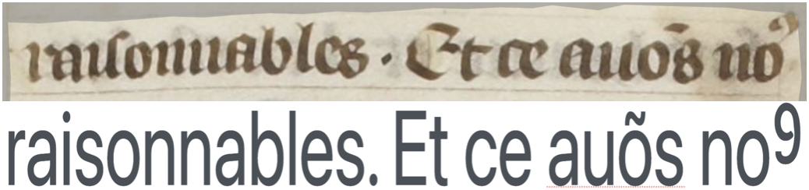

Gallic(orpor)a
A collaborative initiative between research and heritage institutions aimed at extracting structured information from historical digitized documents
Project
The Gallic(orpor)a project develops a pipeline for mass digitisation of historical documents. It focuses on French documents written between the 15th and the 18th centuries, may they be manuscripts, incunabula or prints. The project addresses three main tasks: document layout analysis, handwritten text recognition and linguistic annotation (lemmata, POS tags and morphology).
Gallic(orpor)a, supported by a BnF DataLab grant, is a collaboration between several research institutions (École nationale des chartes, Inria, University of Geneva) and the Bibliothèque nationale de France.
Datasets
Layout analysis
Layout analysis is a computer vision task that identifies and labels structural regions on printed or handwritten document pages. In our work, this process leverages a controlled vocabulary, SegmOnto, developed as part of the Gallic(orpor)a project, which provides a standardized conceptual framework for describing layout elements. By using such a vocabulary, we can produce homogeneous, interoperable annotation data across documents, collections, and institutions, ensuring consistent representation of complex document structures.
We have created the first dataset specifically designed to train a model for layout analysis, covering documents from the earliest printed works through the end of the 18th century.
Automatic Text Recognition
Automatic text recognition is the process of converting textual content in images into machine-readable text, whether the source is printed or handwritten. For historical documents, this task requires careful transcription decisions, as the images often contain complex elements such as abbreviations, obsolete letter forms, and writing conventions that are no longer used in modern texts.
To address these challenges, we have created a training dataset spanning documents from the late Middle Ages through the early modern period, with transcriptions harmonized according to a standardized and consistent set of rules.
Lemmatisation
Lemmatization is the linguistic process of reducing a word to its canonical or “dictionary” form, known as a lemma. This task is particularly important for historical documents, as lemmatizers are typically trained on contemporary French and do not account for historical spellings and lexemes (_estoit_ vs _était_).
Using a new diachronic dataset spanning the 15th to 18th centuries, we contribute to the development of more robust NLP tools tailored for historical texts.
Team
Principal Investigators
Ariane Pinche
Principal Investigator
École nationale des chartes | PSL
Simon Gabay
Principal Investigator
University of Geneva
Collaborators
Kelly Christensen
Intern
Inria, Paris

Malamatenia Vlachou-Efstathiou
Annotator
École nationale des chartes | PSL
Noé Leroy
Annotator
École nationale des chartes | PSL

Maeva Nguyen
Annotator
École nationale des chartes | PSL

Johannes Laroche
Annotator
École nationale des chartes | PSL

Malamatenia Vlachou-Efstathiou
Annotator
Partners

Benoît Sagot
Researcher
Inria, Paris
Laurent Romary
Researcher
Inria, Paris
Rachel Bawden
Researcher
Inria, Paris

Pedro Ortiz Suarez
Researcher
Inria, Paris
Jean-Baptiste Camps
Researcher
École nationale des chartes | PSL
Publications
Our initiative aims at designing a controlled vocabulary for the description of the layout of textual sources: SegmOnto. Following a more physical approach rather than a strictly semantic one, it is designed as a pragmatic and generic typology, coping with most of the Western historical documents rather than answering specific needs. The harmonisation of the layout description has a double objective: on the one hand it facilitates the mutualisation of annotated data and therefore the training of better models for page segmentation (a crucial preliminary step for text recognition), on the other hand it allows the development of a shared post-processing workflow and pipeline for the transformation of ALTO or PAGE files into DH standard formats, which preserves as much as possible the link between the extracted information and the digital facsimile. To demonstrate the capacity of SegmOnto to answer both these objectives, we aggregate data from multiple projects to train a layout analysis model, and we propose a prototype of a generic pipeline for converting ALTO-XMLs into XML-TEI.
Depuis quelques années, la philologie computationnelle a ouvert la voie à de nouvelles approches pour l'étude des textes médiévaux et modernes. Ces approches nécessitent cependant des données en grande quantité que l'on ne peut obtenir qu'en extrayant les textes à partir des fac-similés numériques. Pour ce faire, la recherche a besoin d'outils efficaces, s'appuyant sur des guides qui garantissent une interopérabilité maximale entre les différents états d'une langue (ancien français, moyen français, etc.) et les différents types de textes (manuscrits, imprimés, etc.). Cet article se concentre sur la production imprimée du XVIe siècle, en langue française et en caractères gothiques, en prenant pour cas d'étude un corpus romand. Nous proposons deux modèles qui améliorent l'état de l'art actuel : l'un pour l'analyse de la mise en page et l'autre pour l'OCR. Ces modèles s'appuient sur un vocabulaire contrôlé pour la description des pages et sur un guide de transcription pour les textes en gothique.
Cultural heritage institutions today aim to digitise their collections of prints and manuscripts (Bermès 2020) and are generating more and more digital images (Gray 2009). To enrich these images, many institutions work with standardised formats such as IIIF, preserving as much of the source’s information as possible. To take full advantage of textual documents, an image alone is not enough. Thanks to automatic text recognition technology, it is now possible to extract images’ content on a large scale. The TEI seems to provide the perfect format to capture both an image’s formal and textual data (Janès et al. 2021). However, this poses a problem. To ensure compatibility with a range of use cases, TEI XML files must guarantee IIIF or RDF exports and therefore must be based on strict data structures that can be automated. But a rigid structure contradicts the basic principles of philology, which require maximum flexibility to cope with various situations. The solution proposed by the Gallic(orpor)a project1 attempted to deal with such a contradiction, focusing on French historical documents produced between the 15th and the 18th c. It aims to enrich the digital facsimiles distributed by the French National Library (BnF).
The forefront of research on textual documents (may they be manuscripts and prints) is slowly moving from text recognition to automatic encoding. Quickly transforming images into XML-TEI documents is therefore the next important obstacle that needs to be tackled to offer enhanced mining options to digital libraries users.
Recommandations for the annotation of classical French: tokenisation, lemmatisation, Part of speech tagging, morphology.
Resources
-
Dataset: Gallicorpora/HTR-imprime-18e-siecle
Simon Gabay, Ariane Pinche
-
Dataset: Gallicorpora/HTR-imprime-17e-siecle
Malamatenia Vlachou-Efstathiou, Simon Gabay, Ariane Pinche
-
Dataset: Gallicorpora/HTR-imprime-16e-siecle
Malamatenia Vlachou-Efstathiou, Simon Gabay, Ariane Pinche
-
Dataset: Gallicorpora/HTR-incunable-15e-siecle
Noé Leroy, Ariane Pinche, Simon Gabay
-
Dataset: Gallicorpora/HTR-MSS-15e-Siecle
Noé Leroy, Ariane Pinche, Simon Gabay
-
Dataset: Gallicorpora/Lemmatisation
Johannes Laroche, Maeva Nguyen, Ariane Pinche, Simon Gabay
-
Segmentation model: SegmOnto Capricciosa
Maxime Humeau, Simon Gabay, Ariane Pinche
-
ATR model: Gallicorpora+
Ariane Pinche, Simon Gabay
Contact
Email: ariane.pinche@cnrs.fr / simon.gabay@unige.ch
Address: CIHAM, CNRS, Lyon, France / Humanités numériques, Université de Genève, Geneva, Switzerland
For inquiries about collaboration, data access, or other questions, please reach out via email.